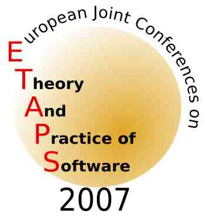
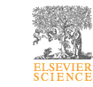

|

|
Seventh Workshop on Language Descriptions, Tools and Applications
LDTA 2007
|

|
|
|
In cooperation with ACM SIGPLAN
|
![[ACM]](Images/acmlogo.gif)
|
|
|
March 25, 2007 in Braga, Portugal
Call for Papers:
.txt,
.pdf,
|
|
Scope
The aim of this one-day workshop is to bring together researchers from
academia and industry interested in the field of formal language
definitions and language technologies, with a special emphasis on
tools developed for or with these language definitions. This active
area of research involves the following basic technologies:
- Program analysis, transformation, and generation
- Formal analysis of language properties
- Automatic generation of language processing tools
For example, language definitions can be augmented in a manner so that
not only compilers or interpreters can be automatically generated but
also other tools such as syntax-directed editors, debuggers, partial
evaluators, test generators, and documentation generators. Although
various specification formalisms like attribute grammars, action
semantics, operational semantics, and algebraic approaches have been
developed, they are not widely exploited in current practice.
It is the aim of the LDTA workshops to bridge this gap between theory
and practice. Among others, the following application domains can
benefit from advanced language technologies:
- Software component models and modeling languages
- Re-engineering and re-factoring
- Aspect-oriented programming
- Domain-specific languages
- XML processing
- Visualization and graph transformation
- Programming environments such as Eclipse, NetBeans and Visual Studio
- Modern runtime platforms including .Net, Rotor, Java Virtual Machine
The workshop welcomes contributions on all aspects of formal language
definitions, with special emphasis on applications and tools developed
for or with these language definitions. Experience papers describing
novel or compelling uses of language definition-based methods in real
world projects are particularly sought.
Invited Speaker:
The invited speaker for LDTA 2007 is Uwe Assmann from TU Dresden.
Workshop Programme
The programme will be published here in the spring of 2007 once it
has been determined.
Registration
Registration for this workshop is handled via the
ETAPS registration procedure which will be available from the
main ETAPS web page.
We encourage all LDTA participants to also register for the ETAPS
workshop dinner to be held the night of the workshop.
Submission Procedure and Publication
Submission will be open from autumn 2006. Three classes of papers are
solicited: research papers, experience reports and
short tool-demo papers. Experience reports must describe the use
of a language-based tool to solve a non-trivial applied problem with
an emphasis on the advantages and disadvantages of the tool. Tool-demo
papers should contain a brief description of the tool and include a
section that clearly explains what will be demonstrated.
Research papers and experience reports should be at most 15 pages in
length and tool-demo papers should be at most 4 pages in length. All
classes of paper should be submitted electronically as PostScript or
PDF files to both of the program committee chairs, Tony Sloane and Adrian Johnstone. The message
should also contain a text-only abstract and contact author
information.
Please use the ENTCS style (generic LaTeX
package) for preparing your submission of a full-length or tool-demo paper.
Author's instructions and examples can be found in the ENTCS generic
LaTeX package.
The final versions of accepted papers will be published in Electronic
Notes in Theoretical Computer Science (ENTCS), Elsevier Science, and
will be made available during the workshop.
The authors of the best full-length papers will be invited to
write a journal version of their paper which will be separately
reviewed and, assuming acceptance, be published in journal form. As
in past years, this will be done in a a special issue devoted to LDTA
2007 of the journal Science of Computer
Programming (Elsevier Science).
Important Dates
|
Submission deadline:
|
December 4, 2006 (title and abstract)
|
|
|
December 11, 2006 (paper)
|
|
Notification:
|
January 16, 2007
|
|
Final version due:
|
February 16, 2007
|
|
Workshop:
|
March 25, 2007
|
Program Committee
-
Judith Bishop, University of Pretoria, South Africa
-
Claus Brabrand, BRICS, University of Aarhus, Denmark
-
Nigel Horspool,
University of Victoria, Canada
-
Johan Jeuring,
Utrecht University, The Netherlands
-
Adrian Johnstone,
Royal Holloway, University of London, UK (co-chair)
-
Steven Klusener,
Vrije Universiteit, The Netherlands
-
Kent Lee, Luther College, USA
-
Brian Malloy,
Clemson University, USA
-
Terence Parr, University of San Francisco, USA
-
Michael Schwartzbach,
BRICS, University of Aarhus, Denmark
-
Tony Sloane,
Macquarie University, Australia (co-chair)
-
Jurgen Vinju, CWI, The Netherlands
Organizing Committee
History
LDTA 2007 is the seven instance of a series of succesful ETAPS
satellite events:
-
2001
(Genova, Italy)
-
2002
(Grenoble, France)
-
2003
(Warsaw, Poland)
-
2004
(Barcelona, Spain)
-
2005
(Edinburgh, Scotland)
-
2006
(Vienna, Austria)
The workshop emerged from the Workshops on Attribute Grammars and
their Applications (WAGA'90, Paris; SAGA'91, Prague, WAGA'99,
Amsterdam, and WAGA'00, Ponte de
Lima) and from the ASF+SDF Workshops (ASF+SDF'95 and
ASF+SDF'97, both in Amsterdam).